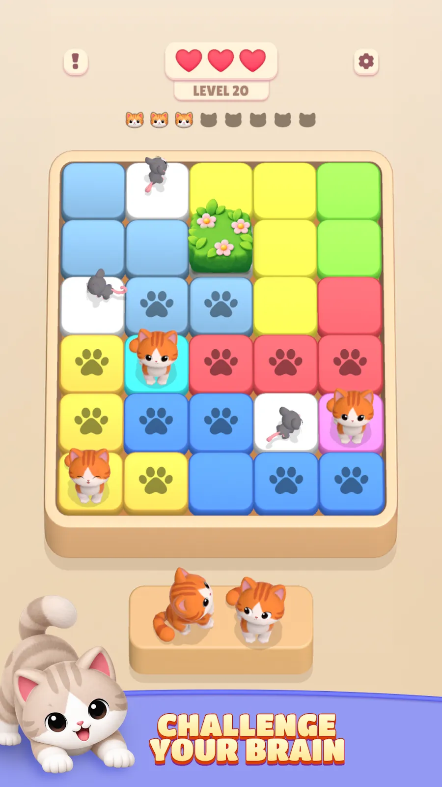

← All case studies


KittyDoku + CarDoku · Puzzle design
Deduction puzzles you solve by looking
KittyDoku and CarDoku are logic puzzles in the family of Star Battle and Queens. I designed their rules and levels in a purpose-built HTML workbench with its own solver, so every level has exactly one answer and can be reached without guessing.
